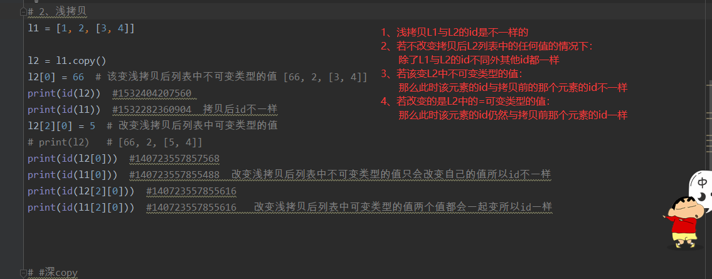
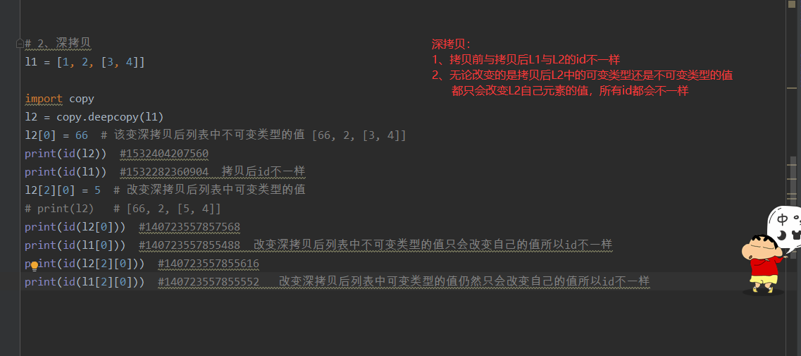

# 浅拷贝
l1 = [1, 2, [3, 4]]
l2 = l1.copy()
l2[0] = 66 # 该变浅拷贝后列表中不可变类型的值 [66, 2, [3, 4]]
print(id(l2)) #1532404207560
print(id(l1)) #1532282360904 拷贝后id不一样
l2[2][0] = 5 # 改变浅拷贝后列表中可变类型的值
# print(l2) # [66, 2, [5, 4]]
print(id(l2[0])) #140723557857568
print(id(l1[0])) #140723557855488 改变浅拷贝后列表中不可变类型的值只会改变自己的值所以id不一样
print(id(l2[2][0])) #140723557855616
print(id(l1[2][0])) #140723557855616 改变浅拷贝后列表中可变类型的值两个值都会一起变所以id一样

# 2、深拷贝
l1 = [1, 2, [3, 4]]
import copy
l2 = copy.deepcopy(l1)
l2[0] = 66 # 该变深拷贝后列表中不可变类型的值 [66, 2, [3, 4]]
print(id(l2)) #1532404207560
print(id(l1)) #1532282360904 拷贝后id不一样
l2[2][0] = 5 # 改变深拷贝后列表中可变类型的值
# print(l2) # [66, 2, [5, 4]]
print(id(l2[0])) #140723557857568
print(id(l1[0])) #140723557855488 改变深拷贝后列表中不可变类型的值只会改变自己的值所以id不一样
print(id(l2[2][0])) #140723557855616
print(id(l1[2][0])) #140723557855552 改变深拷贝后列表中可变类型的值仍然只会改变自己的值所以id不一样